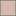

<!doctype html>
<html lang="en">
    <head>
        <meta charset="utf-8">
        <meta http-equiv="X-UA-Compatible" content="IE=edge">
        <meta name="viewport" content="initial-scale=1,user-scalable=no,maximum-scale=1,width=device-width">
        <meta name="mobile-web-app-capable" content="yes">
        <meta name="apple-mobile-web-app-capable" content="yes">
        <link rel="stylesheet" href="css/leaflet.css">
        <link rel="stylesheet" href="css/qgis2web.css"><link rel="stylesheet" href="css/fontawesome-all.min.css">
        <link rel="stylesheet" href="css/leaflet-search.css">
        <link rel="stylesheet" href="css/leaflet-control-geocoder.Geocoder.css">
        <link rel="stylesheet" href="css/leaflet-measure.css">
        <style>
        html, body, #map {
            width: 100%;
            height: 100%;
            padding: 0;
            margin: 0;
        }
        </style>
        <title>Etat des lieux LGI MBAO</title>
    </head>
    <body>
        <div id="map">
        </div>
        <script src="js/qgis2web_expressions.js"></script>
        <script src="js/leaflet.js"></script>
        <script src="js/leaflet.rotatedMarker.js"></script>
        <script src="js/leaflet.pattern.js"></script>
        <script src="js/leaflet-hash.js"></script>
        <script src="js/Autolinker.min.js"></script>
        <script src="js/rbush.min.js"></script>
        <script src="js/labelgun.min.js"></script>
        <script src="js/labels.js"></script>
        <script src="js/leaflet-control-geocoder.Geocoder.js"></script>
        <script src="js/leaflet-measure.js"></script>
        <script src="js/leaflet-search.js"></script>
        <script src="data/Etat_des_lieux1_1.js"></script>
        <script src="data/batiment_2.js"></script>
        <script>
        var highlightLayer;
        function highlightFeature(e) {
            highlightLayer = e.target;

            if (e.target.feature.geometry.type === 'LineString') {
              highlightLayer.setStyle({
                color: '#00ffe2',
              });
            } else {
              highlightLayer.setStyle({
                fillColor: '#00ffe2',
                fillOpacity: 1
              });
            }
            highlightLayer.openPopup();
        }
        var map = L.map('map', {
            zoomControl:true, maxZoom:28, minZoom:1
        }).fitBounds([[14.749207155581542,-17.353567541657085],[14.757450195582683,-17.34108157532656]]);
        var hash = new L.Hash(map);
        map.attributionControl.setPrefix('<a href="https://github.com/tomchadwin/qgis2web" target="_blank">qgis2web</a> &middot; <a href="https://leafletjs.com" title="A JS library for interactive maps">Leaflet</a> &middot; <a href="https://qgis.org">QGIS</a>');
        var autolinker = new Autolinker({truncate: {length: 30, location: 'smart'}});
        var measureControl = new L.Control.Measure({
            position: 'topleft',
            primaryLengthUnit: 'meters',
            secondaryLengthUnit: 'kilometers',
            primaryAreaUnit: 'sqmeters',
            secondaryAreaUnit: 'hectares'
        });
        measureControl.addTo(map);
        document.getElementsByClassName('leaflet-control-measure-toggle')[0]
        .innerHTML = '';
        document.getElementsByClassName('leaflet-control-measure-toggle')[0]
        .className += ' fas fa-ruler';
        var bounds_group = new L.featureGroup([]);
        function setBounds() {
        }
        map.createPane('pane_OpenStreetMap_0');
        map.getPane('pane_OpenStreetMap_0').style.zIndex = 400;
        var layer_OpenStreetMap_0 = L.tileLayer('https://tile.openstreetmap.org/{z}/{x}/{y}.png', {
            pane: 'pane_OpenStreetMap_0',
            opacity: 1.0,
            attribution: '',
            minZoom: 1,
            maxZoom: 28,
            minNativeZoom: 0,
            maxNativeZoom: 19
        });
        layer_OpenStreetMap_0;
        map.addLayer(layer_OpenStreetMap_0);
        function pop_Etat_des_lieux1_1(feature, layer) {
            layer.on({
                mouseout: function(e) {
                    for (i in e.target._eventParents) {
                        e.target._eventParents[i].resetStyle(e.target);
                    }
                    if (typeof layer.closePopup == 'function') {
                        layer.closePopup();
                    } else {
                        layer.eachLayer(function(feature){
                            feature.closePopup()
                        });
                    }
                },
                mouseover: highlightFeature,
            });
            var popupContent = '<table>\
                    <tr>\
                        <td colspan="2">' + (feature.properties['Id'] !== null ? autolinker.link(feature.properties['Id'].toLocaleString()) : '') + '</td>\
                    </tr>\
                    <tr>\
                        <th scope="row">FID_1</th>\
                        <td>' + (feature.properties['FID_1'] !== null ? autolinker.link(feature.properties['FID_1'].toLocaleString()) : '') + '</td>\
                    </tr>\
                    <tr>\
                        <td colspan="2">' + (feature.properties['Shape__'] !== null ? autolinker.link(feature.properties['Shape__'].toLocaleString()) : '') + '</td>\
                    </tr>\
                    <tr>\
                        <td colspan="2">' + (feature.properties['Id_1'] !== null ? autolinker.link(feature.properties['Id_1'].toLocaleString()) : '') + '</td>\
                    </tr>\
                    <tr>\
                        <th scope="row">Num</th>\
                        <td>' + (feature.properties['Num'] !== null ? autolinker.link(feature.properties['Num'].toLocaleString()) : '') + '</td>\
                    </tr>\
                    <tr>\
                        <th scope="row">Nom</th>\
                        <td>' + (feature.properties['Nom'] !== null ? autolinker.link(feature.properties['Nom'].toLocaleString()) : '') + '</td>\
                    </tr>\
                    <tr>\
                        <td colspan="2">' + (feature.properties['Cloture'] !== null ? autolinker.link(feature.properties['Cloture'].toLocaleString()) : '') + '</td>\
                    </tr>\
                </table>';
            layer.bindPopup(popupContent, {maxHeight: 400});
        }

        function style_Etat_des_lieux1_1_0() {
            return {
                pane: 'pane_Etat_des_lieux1_1',
                opacity: 1,
                color: 'rgba(199,0,0,1.0)',
                dashArray: '',
                lineCap: 'square',
                lineJoin: 'bevel',
                weight: 2.0,
                fillOpacity: 0,
                interactive: true,
            }
        }
        map.createPane('pane_Etat_des_lieux1_1');
        map.getPane('pane_Etat_des_lieux1_1').style.zIndex = 401;
        map.getPane('pane_Etat_des_lieux1_1').style['mix-blend-mode'] = 'normal';
        var layer_Etat_des_lieux1_1 = new L.geoJson(json_Etat_des_lieux1_1, {
            attribution: '',
            interactive: true,
            dataVar: 'json_Etat_des_lieux1_1',
            layerName: 'layer_Etat_des_lieux1_1',
            pane: 'pane_Etat_des_lieux1_1',
            onEachFeature: pop_Etat_des_lieux1_1,
            style: style_Etat_des_lieux1_1_0,
        });
        bounds_group.addLayer(layer_Etat_des_lieux1_1);
        map.addLayer(layer_Etat_des_lieux1_1);
        function pop_batiment_2(feature, layer) {
            layer.on({
                mouseout: function(e) {
                    for (i in e.target._eventParents) {
                        e.target._eventParents[i].resetStyle(e.target);
                    }
                    if (typeof layer.closePopup == 'function') {
                        layer.closePopup();
                    } else {
                        layer.eachLayer(function(feature){
                            feature.closePopup()
                        });
                    }
                },
                mouseover: highlightFeature,
            });
            var popupContent = '<table>\
                    <tr>\
                        <th scope="row">Id</th>\
                        <td>' + (feature.properties['Id'] !== null ? autolinker.link(feature.properties['Id'].toLocaleString()) : '') + '</td>\
                    </tr>\
                    <tr>\
                        <th scope="row">Num</th>\
                        <td>' + (feature.properties['Num'] !== null ? autolinker.link(feature.properties['Num'].toLocaleString()) : '') + '</td>\
                    </tr>\
                </table>';
            layer.bindPopup(popupContent, {maxHeight: 400});
        }

        function style_batiment_2_0() {
            return {
                pane: 'pane_batiment_2',
                opacity: 1,
                color: 'rgba(35,35,35,1.0)',
                dashArray: '',
                lineCap: 'butt',
                lineJoin: 'miter',
                weight: 1.0, 
                fill: true,
                fillOpacity: 1,
                fillColor: 'rgba(164,113,88,1.0)',
                interactive: true,
            }
        }
        map.createPane('pane_batiment_2');
        map.getPane('pane_batiment_2').style.zIndex = 402;
        map.getPane('pane_batiment_2').style['mix-blend-mode'] = 'normal';
        var layer_batiment_2 = new L.geoJson(json_batiment_2, {
            attribution: '',
            interactive: true,
            dataVar: 'json_batiment_2',
            layerName: 'layer_batiment_2',
            pane: 'pane_batiment_2',
            onEachFeature: pop_batiment_2,
            style: style_batiment_2_0,
        });
        bounds_group.addLayer(layer_batiment_2);
        map.addLayer(layer_batiment_2);
            var title = new L.Control();
            title.onAdd = function (map) {
                this._div = L.DomUtil.create('div', 'info');
                this.update();
                return this._div;
            };
            title.update = function () {
                this._div.innerHTML = '<h2>Etat des lieux LGI MBAO</h2>';
            };
            title.addTo(map);
        var osmGeocoder = new L.Control.Geocoder({
            collapsed: true,
            position: 'topleft',
            text: 'Search',
            title: 'Testing'
        }).addTo(map);
        document.getElementsByClassName('leaflet-control-geocoder-icon')[0]
        .className += ' fa fa-search';
        document.getElementsByClassName('leaflet-control-geocoder-icon')[0]
        .title += 'Search for a place';
        var baseMaps = {};
        L.control.layers(baseMaps,{' batiment': layer_batiment_2,' Etat_des_lieux1': layer_Etat_des_lieux1_1,"OpenStreetMap": layer_OpenStreetMap_0,},{collapsed:false}).addTo(map);
        setBounds();
        var i = 0;
        layer_Etat_des_lieux1_1.eachLayer(function(layer) {
            var context = {
                feature: layer.feature,
                variables: {}
            };
            layer.bindTooltip((layer.feature.properties['Num'] !== null?String('<div style="color: #e10000; font-size: 10pt; font-family: \'MS Shell Dlg 2\', sans-serif;">' + layer.feature.properties['Num']) + '</div>':''), {permanent: true, offset: [-0, -16], className: 'css_Etat_des_lieux1_1'});
            labels.push(layer);
            totalMarkers += 1;
              layer.added = true;
              addLabel(layer, i);
              i++;
        });
        var i = 0;
        layer_batiment_2.eachLayer(function(layer) {
            var context = {
                feature: layer.feature,
                variables: {}
            };
            layer.bindTooltip((layer.feature.properties['Num'] !== null?String('<div style="color: #000000; font-size: 4pt; font-family: \'MS Shell Dlg 2\', sans-serif;">' + layer.feature.properties['Num']) + '</div>':''), {permanent: true, offset: [-0, -16], className: 'css_batiment_2'});
            labels.push(layer);
            totalMarkers += 1;
              layer.added = true;
              addLabel(layer, i);
              i++;
        });
        map.addControl(new L.Control.Search({
            layer: layer_Etat_des_lieux1_1,
            initial: false,
            hideMarkerOnCollapse: true,
            propertyName: 'Num'}));
        document.getElementsByClassName('search-button')[0].className +=
         ' fa fa-binoculars';
        resetLabels([layer_Etat_des_lieux1_1,layer_batiment_2]);
        map.on("zoomend", function(){
            resetLabels([layer_Etat_des_lieux1_1,layer_batiment_2]);
        });
        map.on("layeradd", function(){
            resetLabels([layer_Etat_des_lieux1_1,layer_batiment_2]);
        });
        map.on("layerremove", function(){
            resetLabels([layer_Etat_des_lieux1_1,layer_batiment_2]);
        });
        </script>
    </body>
</html>
